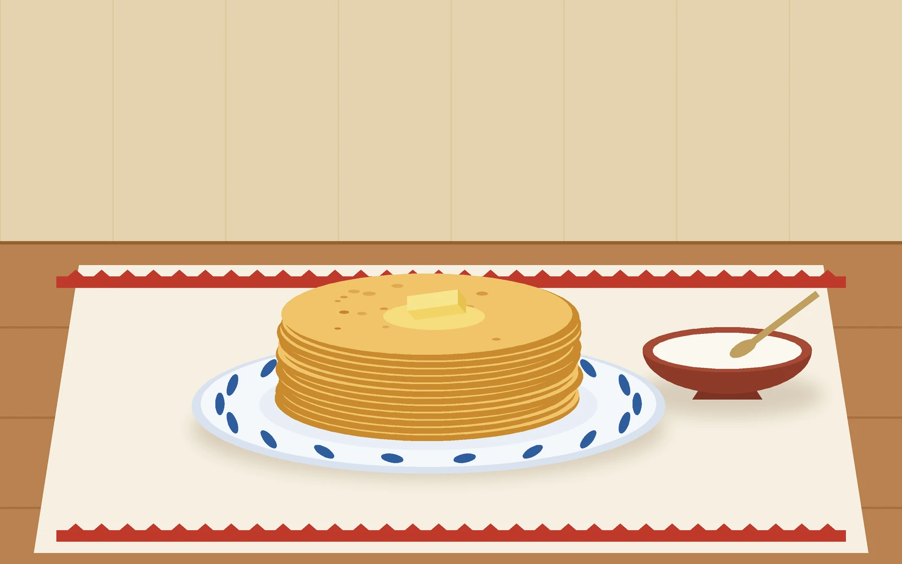
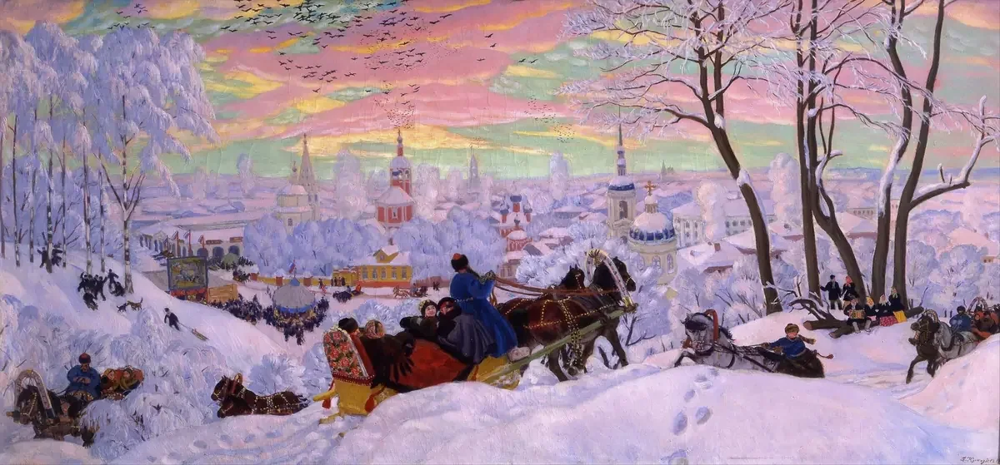
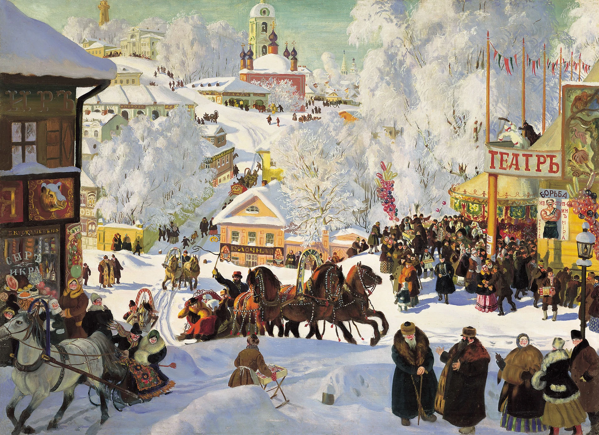
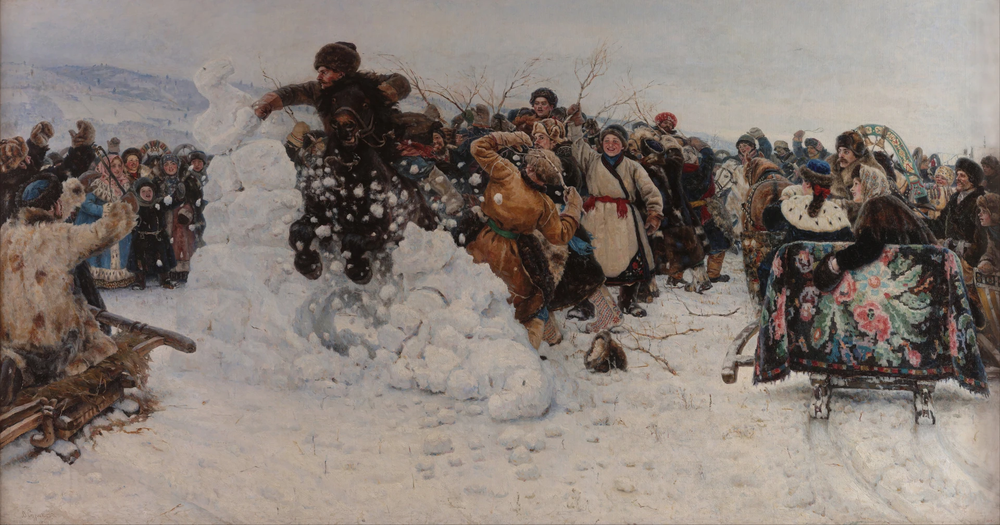
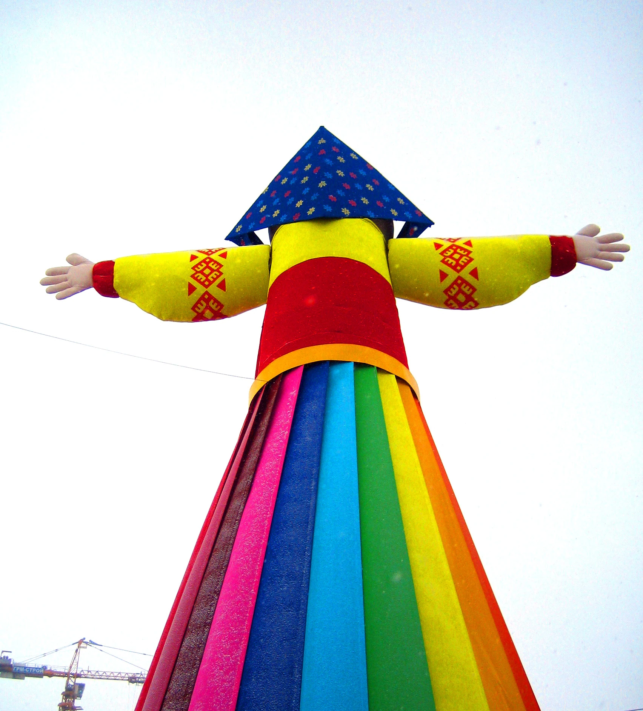
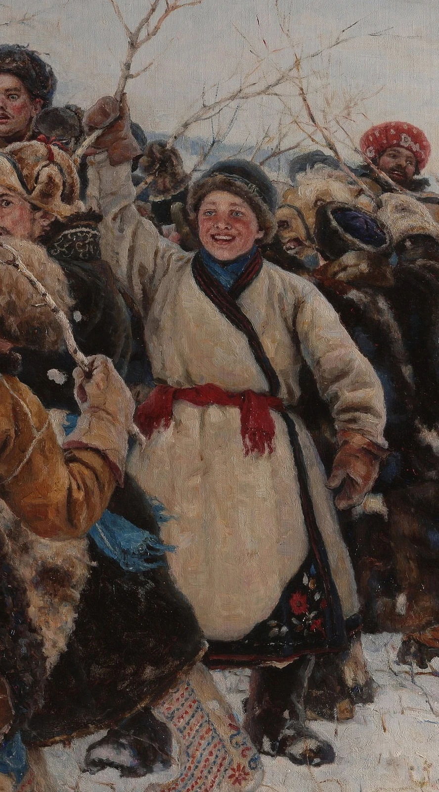

아직 펼치지 않은 카드금식 전날의 잔치 · 2러시아 마슬레니차정교회의 긴 사순절 바로 전 일주일, 러시아 사람들은 둥근 팬케이크를 실컷 먹어요. 이 팬케이크는 무엇을 닮았을까요?해님을 닮은 둥근 팬케이크를 먹는 주간이 있대!
사순절 앞 일주일 · 수리코프의 1891년 그림러시아 · 시베리아 크라스노야르스크
러시아 마슬레니차
정교회의 긴 사순절 바로 앞 일주일, 러시아 사람들은 블리니를 굽고 썰매를 타며 겨울을 떠나보내요. 그 마지막 날 시베리아에서는 말을 탄 사람이 눈으로 쌓은 성문을 뚫고 들어가는 놀이를 벌였어요. 셋째 장면에서는 화가 수리코프가 1891년에 그린 그 놀이 속에서 사람과 물건을 하나씩 찾아보세요.
눈으로 성을 쌓고, 말을 타고 우르르 뚫고 들어가는 놀이가 있대! 그림 속에 누가 누가 있는지 찾아볼까?
검수 전 시안이에요(기준서 1판). 장면에는 대러시아 백과사전, 러시아 미술관의 설명, 그림의 내력을 다룬 러시아 글에 있는 것만 옮겼어요. 그림 속 사람이 누구인지는 그 글들이 밝힌 것만 적었어요. 상상은 ‘눈 감고 상상해 보기’에만 썼어요.
시안 확인용카드 단계 미리 보기
1
버터 주간
마슬레니차는 정교회의 긴 사순절(대사순절) 바로 앞 일주일이에요. 정교회는 로마 가톨릭과 갈라진 뒤 러시아와 동유럽을 중심으로 자라 온 그리스도교의 큰 갈래이고, 사순절은 부활절을 앞두고 기도하며 음식을 줄이는 때예요.
교회 달력에서는 이 주를 ‘치즈 주간’이라고 불러요. 고기는 한 주 전 일요일을 끝으로 이미 먹지 않지만, 버터와 치즈 같은 유제품은 아직 먹을 수 있어요. ‘마슬레니차(버터 주간)’라는 이름도 이 주에 버터를 듬뿍 쓰던 데서 나왔대요.
사람들은 얇은 팬케이크 블리니를 구워 먹고, 썰매를 타고 얼음 언덕을 미끄러져 내려와요. 정교회는 이 주를 축제라기보다, 사순절을 준비하는 때로 보아요.

러시아 사람들은 이 주의 날마다 이름을 붙였어요. 월요일은 ‘맞이’, 화요일은 ‘놀이 시작’, 수요일은 ‘군것질’, 목요일은 ‘실컷 놀기’, 금요일은 ‘장모의 저녁’, 토요일은 ‘시누이의 모임’, 그리고 마지막 일요일은 ‘용서의 주일’이에요.
이 그림을 그린 쿠스토디예프는 1916년 두 번째 척추 수술을 받은 뒤 남은 삶을 휠체어에서 보냈어요. 혁명 뒤 러시아 안에서 내전이 벌어지던 1919년, 살림살이를 내다 팔면서도 그는 혁명 전 러시아의 마슬레니차를 떠올리며 이 밝은 그림을 그렸어요.
눈 덮인 마을에 썰매가 달리고 사람들이 북적북적해. 일주일 내내 블리니를 굽는대!
물어보기썰매를 탄다면 누구랑 같이 타고 싶어?
2
다시 붓을 든 화가
1888년, 화가 바실리 수리코프의 아내 엘리자베타가 서른 살에 세상을 떠났어요. 수리코프는 동생에게 보낸 편지에 자기 삶이 ‘꺾였다’고 썼어요.
이듬해 가족들의 권유로, 수리코프는 두 딸을 데리고 모스크바를 떠나 고향 시베리아 크라스노야르스크의 어머니 집으로 갔어요. 그곳에서 동생 알렉산드르가 그림 주제를 권했어요. 수리코프가 어린 시절부터 자주 떠올리던 놀이, ‘눈 성 빼앗기’였어요.
“그때 나는 시베리아에서 놀라운 마음의 힘을 얻어 돌아왔어요.”
수리코프가 시인 막시밀리안 볼로신에게 한 말 · 러시아 잡지 「브크루크 스베타」에서
수리코프는 크라스노야르스크 근처 라데이카 마을 사람들에게 부탁해, 눈으로 성문을 쌓고 놀이를 벌이게 했어요. 그 모습을 보며 밑그림을 그렸고, 두 해 동안 이 그림에 매달렸어요.
1890년 가을 모스크바로 돌아간 수리코프는 1891년, 가로가 2.8m 넘는 큰 그림을 마쳤어요.
슬픈 일을 겪은 화가가 고향에 가서, 어릴 때 보던 놀이를 그렸대.
물어보기마음이 힘들 때, 너는 무엇을 하면 다시 힘이 나?
3
눈 성 빼앗기
마슬레니차 마지막 날인 용서의 주일, 시베리아의 카자크들은 ‘눈 성 빼앗기’ 놀이를 벌였어요. 카자크는 말을 타고 싸우는 데 뛰어났던, 러시아 변방의 무사 공동체예요. 눈으로 문이 난 벽을 쌓고, 한 편은 성을 지키고 다른 편은 쳐들어가요. 가장 용감한 사람들은 말을 타고 뛰어들었어요.
말 탄 사람이 수비대를 뚫고 문으로 뛰어들어, 문 위 가로대를 무너뜨리면 성을 빼앗은 거예요. 그림 속 숫자를 하나씩 눌러 보세요.
그림 속 숫자를 하나씩 눌러 보세요. ‘가까이 보기’를 누르면 그 자리를 크게 볼 수 있어요.

바실리 수리코프 「눈 성 빼앗기」, 1891년 · 러시아 미술관 · 그림: 바실리 수리코프 · 퍼블릭 도메인 · 위키미디어 공용(구글 아트 프로젝트)
그림 위의 숫자나 아래 번호를 눌러 보세요.
여섯 곳을 다 찾았어요. 화가는 이 놀이를 그리며 다시 힘을 얻었다고 했어요.
러시아 미술관은 이 놀이가 카자크들이 시베리아를 차지한 일을 기념하던 데서 왔을 수도 있다고 설명해요. 수리코프는 큰 그림마다 역사 속 사건을 그렸는데, 이 그림만은 어린 시절 기억 속의 놀이를 그렸어요.
1891년 이동파(해마다 여러 도시를 돌며 전시회를 연 러시아 화가 모임) 전시회에 처음 걸렸을 때는 평이 엇갈렸지만, 1900년 파리 만국 박람회에서 메달을 받았어요. 1908년부터 러시아 미술관이 이 그림을 지니고 있어요.
말 탄 아저씨가 눈벽을 우르르 무너뜨리며 들어가! 눈덩이가 사방으로 튀어.
물어보기그림 속에서 웃고 있는 사람을 찾아볼까?
4
겨울을 보내는 날
마슬레니차 동안 마을 광장에는 짚과 헝겊으로 만들어 치마를 입힌 인형이 서 있었어요. 사람들은 이 인형도 축제와 같은 이름으로 ‘마슬레니차’라고 불렀어요. 마지막 날이 되면 사람들은 이 인형을 찢거나 모닥불에 태웠어요.
같은 날, 사람들은 사순절을 앞두고 서로 용서를 구했어요. 저녁에는 여인들이 블리니를 들고 묘지에 가서, 무덤 앞에 무릎을 꿇고 돌아가신 이에게도 그동안의 잘못을 용서해 달라고 빌었대요.

다음 날 월요일부터, 부활절을 앞두고 금식하는 대사순절이 시작돼요. 이날 저녁 교회에서 서로 용서를 주고받는 예배는 다음 카드 ‘용서의 주일’에서 이어져요.
마지막 날에는 커다란 인형을 태우며 겨울에게 잘 가라고 인사해.
물어보기마지막 날, 사람들은 서로에게 무슨 말을 했을까?
눈 감고 상상해 보기
눈 덮인 언덕 위로 하얀 입김이 피어올라요. 어디선가 버터에 구운 블리니 냄새가 나요. 딸랑이 소리와 함성 사이로 말발굽이 눈을 차는 소리가 다가오고, 눈벽이 무너지며 하얀 가루가 햇빛 속에 반짝이며 흩날려요.
눈을 감아 봐. 고소한 블리니 냄새! 다그닥다그닥 말이 달려와… 우르르!
나의 자리
한 계절을 보내며, 나는 무엇을 넉넉히 나누고 떠나보내고 싶나요?
해님 모양 팬케이크 위에 무엇을 얹어 먹고 싶어?
마음에 닿는 한 줄을 고르거나 직접 써 보세요. 한 줄을 남기면 이 자리의 도장이 찍혀요. 이 기기에만 저장돼요.
더 깊이
이야기를 보다 궁금해질 만한 것들이에요. 답을 읽거나 짧은 영화로 보세요.
사순절이 뭐길래, 그 앞에서 실컷 먹고 놀아요?

같은 날 낮엔 치고받고, 저녁엔 용서를 빌었다고요?
뒷이야기
아직 펼치지 않은 이야기예요. 누르면 이야기가 펼쳐지고 색이 돌아와요. 더 알고 싶으면 근거를 따라가 보세요.
다 펼치면, 다음에 오실 때 새 이야기가 찾아와요.
오늘의 뒷이야기는 여기까지예요. 다음에 오시면 새 이야기가 기다리고 있어요.
펼친 뒷이야기 · 누르면 다시 볼 수 있어요
더 찾아보기
기록마다 다른 점
블리니와 해 둥근 블리니가 해를 닮았다는 설명이 널리 퍼져 있어요. 대러시아 백과사전은 블리니가 본디 돌아가신 이를 기억하는 음식이었다고 적어요.
놀이의 뿌리 러시아 미술관은 카자크가 시베리아를 차지한 일을 기념하던 데서 왔을 수 있다고 해요. 다른 학자들은 옛 장례 잔치의 겨루기를 닮았다고 보거나, 사람들의 힘을 보여 죽음을 쫓던 놀이로 보았어요.
수비대의 연장 어떤 글은 나뭇가지와 채찍, 딸랑이를 들었다고 하고, 다른 글은 빗자루와 삽으로 막았다고 적어요.
쿠스토디예프 그림의 해 첫 장면의 그림을 위키미디어 공용은 1916년으로 적지만, 학술지 논문은 1919년 그림(캔버스에 유채, 71×98cm)으로 적어요. 그림 왼쪽 치즈 가게 간판에도 화가의 이름과 ‘1919’가 쓰여 있어요. 쿠스토디예프는 1916년부터 「마슬레니차」를 여러 번 그렸어요.
직접 가 보기
확인한 날 · 2026년 11월 18일 · 바뀌기 쉬운 정보라 정기적으로 다시 확인해요
「눈 성 빼앗기」는 상트페테르부르크의 러시아 미술관이 지니고 있어요. 늘 걸려 있는지는 가기 전에 미술관에 확인해 주세요. 구글 아트 앤 컬처에서는 이 그림을 붓 자국이 보일 만큼 크게 확대해 볼 수 있어요.
2027년 마슬레니차는 3월 8일(월)부터 3월 14일(일, 용서의 주일)까지예요(정교회 부활절 5월 2일로 계산). 러시아 여행을 생각한다면 외교부 해외안전여행 누리집에서 여행경보를 먼저 확인해 주세요.
눈 성 빼앗기 금박
그림 속 여섯 곳을 모두 찾아 읽으면 카드에 금박이 입혀져요.
그림 속 여섯 곳을 모두 찾아 읽기
아이와 함께 채색
아이와 함께 끝까지 보면 카드가 채색돼요.
아이와 함께 ‘영화처럼 보기’를 끝까지 보기
근거 보기 (17)
- 대러시아 백과사전(Большая российская энциклопедия): Масленица — 사순절 앞 축제, 교회 달력의 치즈 주간, 교회는 축제가 아닌 사순절 준비로 봄, 고기는 금하고 유제품은 허락, 용서의 주일로 끝나고 대사순절이 이어짐, 날마다의 이름, 블리니는 해와 상관없는 기억의 음식이고 첫 블리니는 조상의 몫, 썰매와 아마, 갓 결혼한 부부, 눈 성 빼앗기와 수리코프의 그림, 성이 무너지면 두 편이 함께 마심, 짚과 헝겊 인형을 ‘마슬레니차’라 부르고 찢거나 태움, 재를 땅에 묻음, 1960년대 소련의 ‘겨울 보내기’, 장터와 발라간, 모두와 그리고 하느님과 화해하려고 서로 용서를 구함, 묘지에서 용서를 빎, 카니발과 맞닿음
- 대러시아 백과사전: Великий пост(대사순절) — 동방에서는 일곱 주(여섯 주와 성주간), 그 앞에 더한 치즈 주간을 러시아에서는 마슬레니차라 부름, 고기는 그 앞 일요일까지, 성주간과 부활절을 준비하는 때
- 아즈부카 베리(Азбука веры): 치즈 주간 — 사순절 앞 마지막 준비 주간, 고기는 이미 먹지 않음, 고기와 작별하는 주일 다음부터 용서의 주일 전까지
- e1.ru(2026년 10월 9일): 2027년 대사순절 안내 — 교회 전통에 따라 고기, 우유와 유제품, 달걀을 끊음, 앞 주간에는 고기만 끊고 유제품·달걀·생선은 먹음
- 러시아 미술관: 마콥스키 「상트페테르부르크 해군성 광장의 마슬레니차」(1869) 설명 — 마슬레니차(버터 주간)라는 이름은 축제 동안 버터를, 특히 블리니에 듬뿍 쓰던 데서 나옴
- 내셔널 지오그래픽(2026년 2월 20일): Maslenitsa — 해의 모양으로 둥근 팬케이크를 구워 해가 돌아오기를 맞았다는 학자 골드스타인의 말, 사순절 앞에 실컷 먹고 마심
- 서울신문(2016년 6월 17일): 동방 정교회 시노드 기사 — 동방 정교회는 로마 가톨릭과 갈라진 뒤 동유럽과 러시아를 중심으로 발전, 그리스 정교회·러시아 정교회 등 지역 교회
- 딕셔너리닷컴(콜린스 영어사전 함께 실음): Cossack — 러시아 남부에 살며 이름난 기병대를 이룬 슬라브 무리, 공동체를 이루어 산 자유로운 무사 농민으로 황제의 기병으로 복무
- 「브크루크 스베타(Вокруг света)」: 수리코프 「눈 성 빼앗기」의 내력과 여덟 가지 — 1888년 서른 살 아내의 죽음, 삶이 ‘꺾였다’는 편지, 크라스노야르스크로 감, 동생 알렉산드르의 제안, 어린 시절 기억, 눈 문을 쌓고 놀이를 벌인 사람들, 1890년 가을과 1891년, 볼로신에게 한 말, 용서의 주일 카자크 놀이, 문과 깃발·상품(보드카 한 통), 가로대, 이긴 사람을 눈밭에 굴리고 포도주, 수비대의 연장과 딸랑이·빈총, 거친 놀이, 검은 말 기억, 코셰바, 로즈발니, 구경꾼 알렉산드르, 놀란 아가씨는 조카 타티야나 도모질로바, 156×282cm, 러시아 미술관, 놀이 뿌리에 대한 학자들의 견해
- 러시아 미술관(구글 아트 앤 컬처): Taking a Snow Town — 역사 이야기가 아닌 유일한 큰 그림, 크라스노야르스크 어린 시절 기억, 마슬레니차 마지막 날의 놀이, 카자크의 시베리아 정복 기념에서 왔을 수 있음, 1891년, 282×156cm, 1908년
- 러시아 미술관 가상 분관: 「눈 성 빼앗기」 설명 — ‘용서의 날’에 벌인 놀이, 눈 대포와 형상, 문 뒤 눈 술병과 파이의 잔칫상, 카자크가 시베리아 정복을 기념해 시작했다고 여김
- 이스토리야.РФ(История.РФ): 겨울을 그린 러시아 그림들 — 라데이카 마을 사람들이 모델, 두 해 작업, 눈 성의 형상·대포·포탄, 빗자루와 삽, 1891년 제19회 이동파 전시와 엇갈린 평, 1900년 파리 만국 박람회 메달, 1908년 러시아 미술관
- 상트페테르부르크 백과사전: 이동전람회협회(이동파) — 1870년 상트페테르부르크와 모스크바 화가들이 세움, 해마다 전시를 열고 모스크바와 지방 도시로 넓힘
- 쿨투라.РФ(Культура.РФ): 「하얗게만 보이는 겨울」 — 라데이카 마을, 동생 알렉산드르가 밝은 카펫을 덮은 썰매에 앉음
- 「브크루크 스베타」: 쿠스토디예프와 세 「마슬레니차」 — 1916년 두 번째 척추 수술과 휠체어, 1919년 내전 속 살림살이를 팖, 혁명 전 러시아를 떠올린 그림
- 러시아 미술관(구글 아트 앤 컬처): Shrovetide(1916) — 1916년 3월 22일 크라치콥스키의 편지 “레핀이 감탄했다”
- 학술지 논문 PDF(쿠스토디예프 1917~1922년 그림 분석) — 「마슬레니차」 1919년, 캔버스에 유채, 71×98cm
그림·사진·소리 출처
- 그림: 보리스 쿠스토디예프 · 퍼블릭 도메인 · 위키미디어 공용
- 그림: 바실리 수리코프 · 퍼블릭 도메인 · 위키미디어 공용(구글 아트 프로젝트)
- 사진: lazyoldsun(플리커) · CC BY 2.0 · 위키미디어 공용
- 이 안내서가 그린 그림 · 러시아 미술관의 글(버터 주간이라는 이름, 블리니에 버터를 듬뿍 씀)을 바탕으로
- 그림: 보리스 쿠스토디예프 · 퍼블릭 도메인 · 위키미디어 공용
- 그림: 바실리 수리코프 · 퍼블릭 도메인 · 위키미디어 공용(구글 아트 프로젝트)
- 그림: 바실리 수리코프 · 퍼블릭 도메인 · 위키미디어 공용(구글 아트 프로젝트)
- 그림: 바실리 수리코프 · 퍼블릭 도메인 · 위키미디어 공용(구글 아트 프로젝트)
- 그림: 바실리 수리코프 · 퍼블릭 도메인 · 위키미디어 공용(구글 아트 프로젝트)
- 그림: 피터르 브뤼헐(아버지) · 퍼블릭 도메인 · 위키미디어 공용
- 이 안내서가 그린 그림 · 히스토릭 UK의 글(1619년 시의 팬케이크 던져 올리기)을 바탕으로
- 그림: 월터스 미술관의 아르메니아 찬송집(W.547) · 퍼블릭 도메인 · 위키미디어 공용
- 그림: 보리스 쿠스토디예프 「마슬레니차」(1916) · 퍼블릭 도메인 · 위키미디어 공용
‘처음 만나는 기독교 문화’의 깊은 카드예요. 카드 단계와 남긴 글은 이 기기에만 저장돼요.